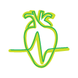
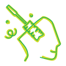
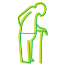

Система відновлення і збереження здоров’я, що
поєднує медичні досягення сучасності та стародавні
техніки оздоровлення, зібрані з усього світу.
Людський організм
Це складний механізм, в роботі якого приймає участь багато взаємозалежних систем.
Здоров’я
Це збалансована робота цих систем, це динамічна рівновага між впливами зовнішнього середовища і реакцією організму на ці впливи.
Хвороба – це наслідок порушення цього балансу.
В сучасному світі погляди людини вкрай поляризовані: Добро і Зло, Чорне і Біле, Тіло і Дух, Свої та Чужі – наслідком цього є постійні внутрішні конфлікти, що перепадають на долю людини, які в свою чергу, призводять до конфліктів із середовищем.
Найдавніші знання, що дійшли до нас, базувались на цілісному світогляді, дозволяючі людині жити у злагоді з собою та довкіллям.
Фахівці з наукової медицини дійшли висновку, що приводом нездорових змін організму стають інтоксикація, хронічна втома та порушення обміну речовин. Ось чому відновлення здоров’я має починатись з лікування саме цих станів.
Тому інтеграція східних оздоровчих методик з досягненнями сучасної наукової медицини має сенс і є найефективнішим підходом до проблеми відновлення здоров’я людини. Система відновлення і збереження здоров’я ‘’Живасвіт’’ є практичним відображенням цих поглядів.
Людський організм успадкував природні здібності до самовідновлення
Тому тактика лікування повинна насамперед бути скерованою на усунення причин симптомів і стимуляцію здатності організму до самовідновлення.
Головне завдання системи:
Відновлення здоров’я і запобігання передчасного старіння шляхом створення для цього відповідних умов, які реалізуються в трьох напрямках:
ІНФОРМАЦІЯ про здоров’я
Мета:
- Познайомити пацієнтів з роботою організму
- Познайомити пацієнтів з законами, які управляють Всесвітом
- Показати взаємозв’язок між Всесвітом і людським організмом
Запрошуємо відвідати семінари про здоров‘я:
ПРАКТИКИ для здоров’я
Мета:
- Створити умови і допомогти організму відновити здоров’я
- Навчити пацієнтів практичних методик запобіганню хвороб і підтримання здоров’я
ВІДПОЧИНОК для здоров’я
Мета:
- Поглянути на гармонійний Всесвіт через призму світогляду древніх
- Попрактикувати стародавні техніки досягнення гармонії:
- ци-гун, хатха-йогу, взаємодію з п’ятьма стихіями природи
Основою системи ЖИВАСВІТ
є наступні програми:
Програма визначення стану організму
Мета:
- Провести загальний огляд організму пацієнта
- Провести аналіз наявних обстежень
- Встановити діагноз
- Сформувати програму відновлення здоров’я пацієнта

Програма детоксикації
Мета:
- Стимулювати функцію видільних систем організму.
- Стимулювати метаболізм
- Допомогти організму у процесі виділення продуктів життєдіяльності

Програма наповнення організму необхідними біохімічними компонентами
Мета:
- Створення умов для відновлення біохімічного балансу організму шляхом корекції метаболізму (обміну речовин)

Програма відновлення функцій хворих органів і систем організму
- Зліквідувати симптоми
- Відновити функцію
- Відновити здоров’я

Програма психогігієни
Мета:
- Управління і контроль емоціями
- Управління і контроль стресами
- Створення власного способу/кодексу поведінки і навчитися застосовувати його до навколишнього середовища

Програма управління процесами старіння
Мета:
- Навчитися ефективно використовувати життєвий ресурс

Програма відновлення організму жінок після родів
Мета:
- Збалансувати функцію гормональної системи
- Відновити форму тіла, нормалізувати обмін речовин
Програма оптимізації перебігу клімаксу у жінок.
Мета:
- Адаптація жіночого організму до змін у репродуктивній системі
Програма догляду за тілом:
Мета:
- Корекція пропорцій і підтримання форми тіла
- Відновлення і підтримання функціонального стану шкіри